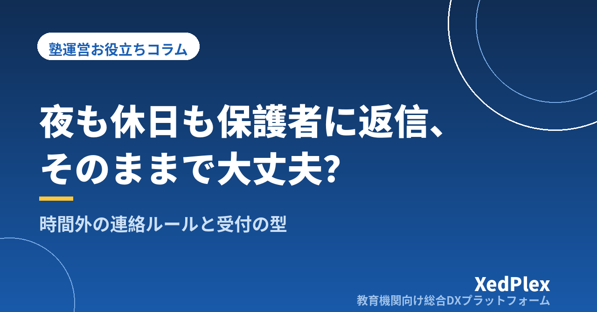

塾の保護者連絡、時間外の対応はどう決める？｜受付時間・返信の目安・緊急時の線引きで「夜も休日も返信」をやめる仕組み

授業を終えて片づけを済ませ、ようやく帰宅した22時。スマートフォンに保護者から「明日の振替、17時に変えられますか？」とメッセージが届きます。日曜日の朝には「来月の講習の料金を教えてください」。すぐに返せば喜ばれますが、一度返すと「この塾は夜でも休日でも返事が来る」という期待が生まれ、次からも同じ対応が求められるようになります。
保護者に悪気があるわけではありません。思い出したときに送っているだけで、多くの場合は「すぐの返事」を求めているわけでもないのです。問題は、塾側が「いつ・何に・どう返すか」を決めていないことにあります。この記事では、塾長ひとりでも続けられる時間外の連絡に対応するルールと受付の仕組みを整理します。
時間外の連絡に追われる塾に共通する3つの状態
夜や休日の返信が当たり前になっている塾では、次のような状態が重なっていることが多くあります。
- 受付時間が保護者に伝わっていない：教室の開いている時間は知っていても、「連絡を受け付けて返信する時間」は案内されていないため、保護者はいつ送ってよいか分かりません。
- 連絡の窓口が塾長個人のスマートフォン：個人のLINEや電話番号で受けていると、通知が私生活にそのまま入り込み、気になって返してしまいます。窓口の整理については塾の保護者連絡、講師の個人LINE頼みは危険？でも詳しく紹介しています。
- すべての連絡を同じ重さで扱っている：欠席の連絡も、料金の問い合わせも、成績の相談も、同じ窓口で同じように受けているため、「どれも早く返さなければ」という気持ちになります。
裏を返せば、連絡を種類で分ける・受付時間と返信の目安を決める・保護者に先に伝えるの3つをそろえれば、時間外の対応は大きく減らせます。
まず、時間外に届く連絡を種類で分ける
時間外に届く連絡は、内容によって「本当にすぐ対応が必要か」が違います。最初に、届く連絡を次の4つに分けてみましょう。
| 種類 | 例 | 時間外の扱い |
|---|---|---|
| 1. 緊急の連絡 | 生徒が帰宅していない、塾でけがをしたと聞いた、など安全にかかわること | 時間外でも対応する。手段（電話など）と対応する人を決めておく |
| 2. 定型の届け出 | 欠席・遅刻の連絡、振替の希望 | 受け付けだけ自動で行い、返信は翌営業時間でよい |
| 3. 事務の問い合わせ | 料金・日程・申込方法などの確認 | 翌営業時間に返信。よくある質問は案内文やホームページで先回りする |
| 4. 相談 | 成績・進路・家庭での様子についての相談 | 文字で長くやりとりせず、電話や面談の日時を調整する |
実際に1〜2週間、届いた連絡をこの4つに振り分けて記録してみると、時間外にすぐ対応しなければならない連絡はごく一部だと分かることが多いはずです。大半は「受け付けたことが分かれば、返事は翌日で困らない」連絡です。
特に多いのが欠席・振替の連絡です。これを個別メッセージで受けている限り、時間外の連絡は減りません。欠席連絡の受け方と振替ルールの決め方は塾の欠席・振替管理のルール作りと運用で紹介しています。
受付時間と返信の目安を決める
種類で分けたら、次は塾としてのルールを決めます。決めるのは次の4項目です。
1. 受付時間
連絡を受け付け、返信を行う時間帯です。授業中は返信できないことが多いため、「授業開始前の時間帯」と「授業終了後の30分」など、実際に返信できる時間に合わせて決めるのが現実的です。教室の開いている時間と一致させる必要はありません。
2. 返信の目安
「受付時間内の連絡には当日中、受付時間外の連絡には翌営業日中に返信します」のように、返信までの目安を示します。目安があるだけで、保護者は「返事がない」と不安にならずにすみます。
3. 休業日の扱い
定休日や年末年始・お盆などの休業期間中は返信しないこと、休業明けに順番に返信することを決めておきます。長期休業の前には、あらかじめお知らせしておくと親切です。
4. 緊急時の連絡方法
時間外でも対応する「緊急」の範囲と、そのときの連絡方法を決めます。たとえば「授業日の帰宅時刻を過ぎても生徒が帰らないなど、安全にかかわるご連絡はお電話で」とするなど、緊急かどうかを保護者が判断しやすい書き方にします。台風などで休講を判断するときの連絡の流れは台風・災害・感染症で休講するとき、塾はどう決める？、授業中の体調不良やけがへの対応は塾で生徒が体調不良・けがをしたときの対応手順で整理しています。
保護者への伝え方と文例
ルールは、決めただけでは伝わりません。保護者の目に入る場所に、何度か繰り返して示すことが大切です。
- 入塾時の案内：規定や入塾のしおりに、受付時間・返信の目安・緊急時の連絡方法を書いておきます。入塾時に口頭でもひと言添えると定着しやすくなります。
- 連絡窓口のプロフィールや自動応答：メッセージの窓口に受付時間を表示し、時間外に届いた連絡には自動で受付の返事が返るようにしておくと、保護者は「届いた」と分かって安心できます。
- ホームページ：よくある質問と一緒に受付時間を載せておきます。ホームページに載せる情報は個人塾のホームページに載せるべき情報と載せなくていい情報が参考になります。
すでに在籍している保護者に新しくルールを伝えるときは、「塾長が休みたいから」ではなく、返信の質と確実さを保つためという目的を添えると受け入れられやすくなります。
保護者の皆さまへ。いつも○○塾をご利用いただきありがとうございます。ご連絡に確実にお応えするため、○月○日より、ご連絡の受付時間を以下のとおりとさせていただきます。
・受付時間：月〜金 15:00〜22:00（授業中は返信が遅れる場合があります）
・受付時間外にいただいたご連絡は、翌営業日中に順番にお返事いたします。
・欠席・振替のご連絡は、これまでどおり時間を問わずお送りいただけます（翌営業日に確認いたします）。
・お子さまの安全にかかわるお急ぎのご連絡は、お電話（○○○-○○○○）でお願いいたします。
ご理解とご協力をお願い申し上げます。
お知らせを出した後も、しばらくは時間外の連絡が届くことがあります。そのときに例外的に返してしまうと、ルールは定着しません。自動の受付返信と翌営業日の返信を淡々と続けることが、結果的に保護者にとっても分かりやすい対応になります。
時間外の連絡を減らす「先回り」の仕組み
ルールを決めることに加えて、そもそも時間外に連絡しなくてすむ状態をつくると、塾長の負担はさらに軽くなります。
- 欠席・振替を決まった方法で受け付ける：フォームやシステムなど、保護者が自分で登録できる方法にすると、時間外でも受付が完結し、塾長は翌日に確認するだけですみます。
- よく聞かれることを先に知らせる：講習の日程や料金、休業日などは、月に1回のお知らせや年間予定でまとめて伝えます。連絡の頻度と内容の考え方は塾の保護者連絡、適切な頻度は？で紹介しています。
- 「通っている様子」が見えるようにする：入退室の通知や定期的な指導報告で塾での様子が伝わっていると、「今日はちゃんと行きましたか？」といった確認の連絡が減ります。考え方は「ちゃんと通っているか」を保護者に見せる塾の仕組みを参考にしてください。
- 相談は面談につなげる：夜のメッセージで長い相談が来たら、「詳しくお話を伺いたいので、お電話か面談でお時間をいただけますか」と日時の調整に切り替えます。文字だけのやりとりは誤解も生まれやすいため、相談ほど直接話すほうが安心です。
時間外の対応を減らすことは、塾長が休める塾をつくることにもつながります。属人業務を仕組みに置き換える考え方は塾長が休めない塾から抜け出す仕組み化でまとめています。
まとめ
保護者からの時間外の連絡に追われないためには、届く連絡を緊急・定型の届け出・事務の問い合わせ・相談の4つに分け、受付時間・返信の目安・休業日の扱い・緊急時の連絡方法の4項目を決めて、入塾時の案内や窓口の表示で保護者に先に伝えることが基本です。さらに、欠席連絡の受付や定期的なお知らせで「時間外に連絡しなくてすむ状態」をつくれば、塾長の夜と休日を取り戻しながら、保護者にとっても分かりやすい塾になります。
まずは今週届いた連絡を4つの種類に振り分け、本当に時間外の対応が必要だったものがいくつあったかを数えてみるところから始めてみてください。
この記事を書いた運営より
私たちは、個人経営・小規模の学習塾向けに、生徒管理・QRコードでの入退室記録・月次請求・保護者へのLINE/メール通知・AIによる学習支援までをひとつにまとめた教育機関向け総合DXプラットフォーム「XedPlex（ゼドプレックス）」を開発・提供しています。初期費用は0円、料金は生徒1名あたり月額300円（税込）から。生徒50名の塾なら月15,000円（税込）です。全国8つの教室で導入されており、導入塾には紹介ホームページの無料作成も行っています。機能の詳細説明はこちら。
XedPlexの詳細を見る